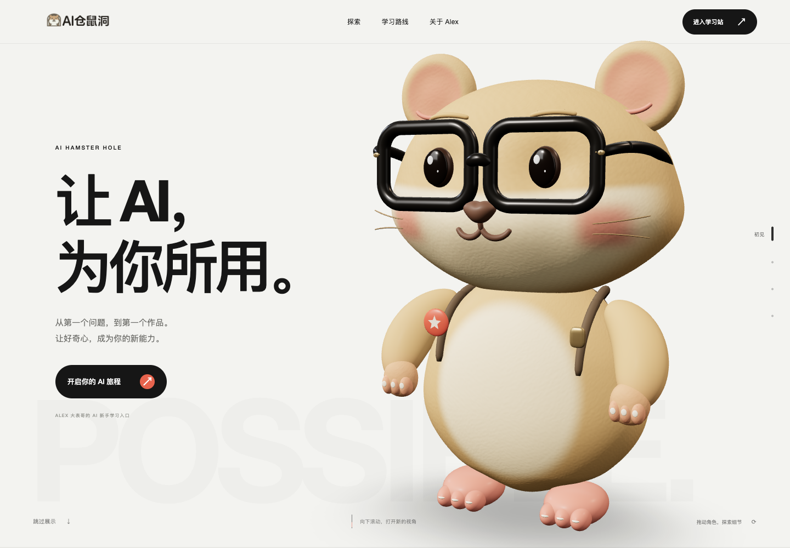
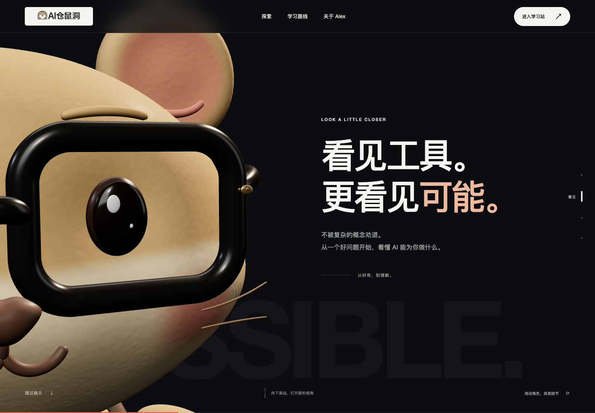
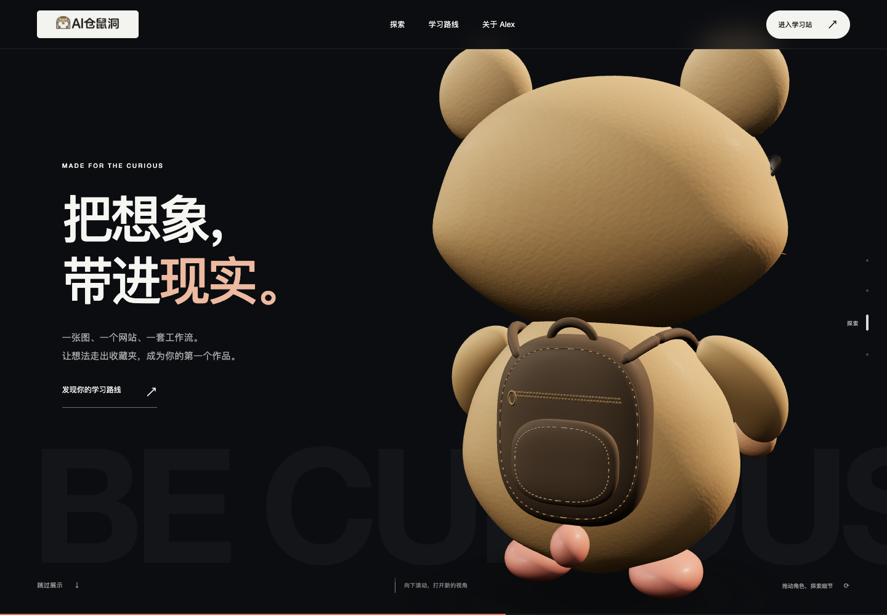
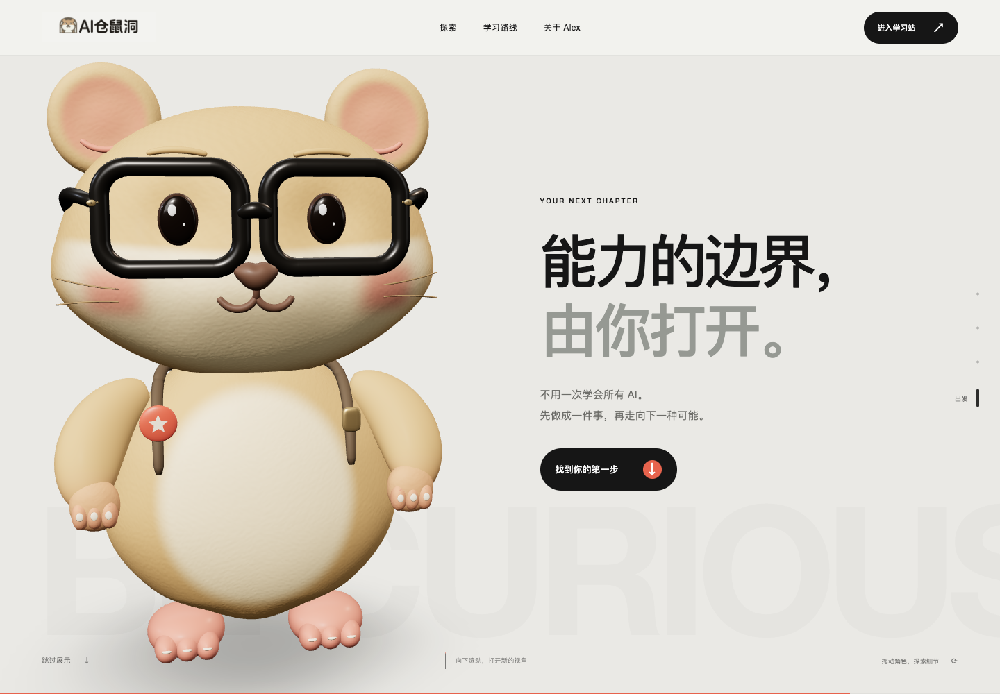
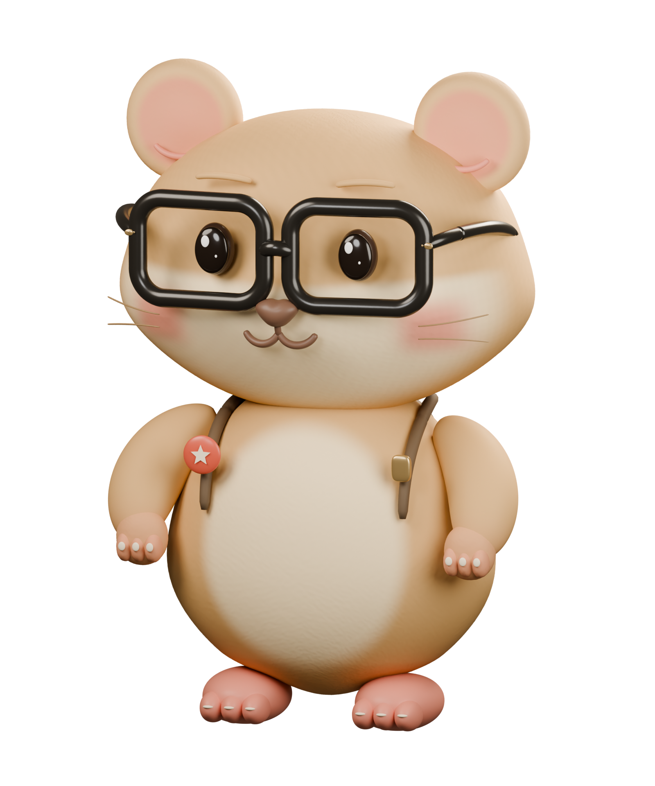
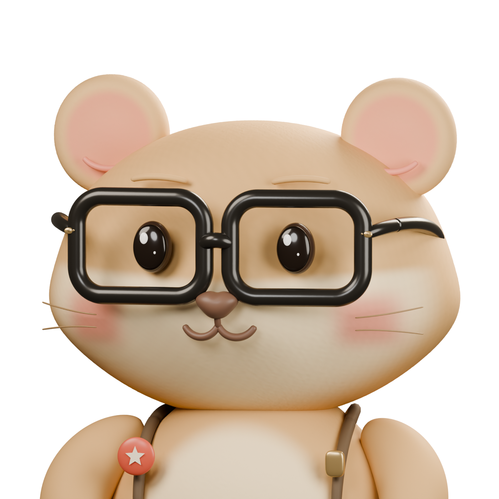
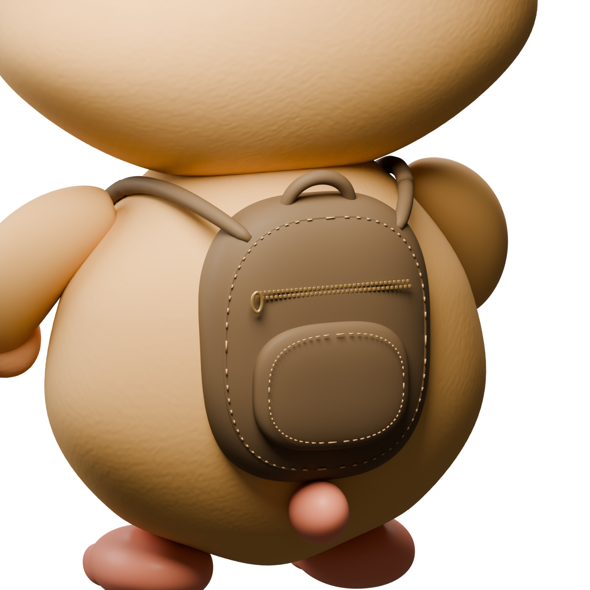
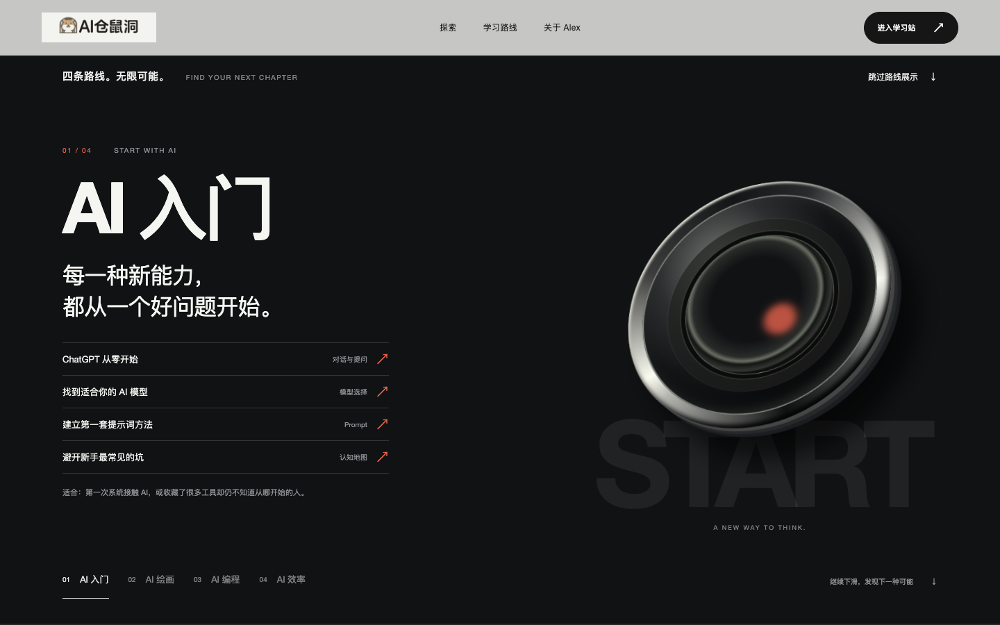

AI HAMSTER HOLE / V3 / 2026.09.08
更近一点。
看见新的可能。
一次从角色到滚动体验的重新设计。百万面仓鼠走进全屏摄影舞台，让画面、镜头与文字共同讲述一段探索 AI 的旅程。
同一个品牌，
全新的第一印象。
拖动分界线，比较同为 1440 × 1000 的真实首屏。左侧为已归档的 V2，右侧为 V3。模型和页面截图各自标注，便于展示更新内容。


页面截图未随报告完整归档。下方模型与其他章节仍可查看。
V2 / 独立互动展台
左右分栏、环形探索舱和悬浮道具，以摸摸、转圈、日夜按钮触发局部反馈；页面滚动主要推进文字内容。
V3 / 旗舰宣传片式叙事
角色成为全屏视觉中心。银白摄影棚、深色细节特写与侧后环绕连续衔接；每一幕只保留清晰的标题与下一步入口。
每一次下滑，
打开一个新视角。
四幕共用固定舞台和滚动进度。镜头、明暗与文字同步变化；章节导航可直接跳转，也可以跳过展示前往学习路线。
初见截图未随报告归档

看见截图未随报告归档

探索截图未随报告归档

出发截图未随报告归档
一百万面，
落在看得见的细节里。
重建脸颊、口鼻与梨形身体；增加耳窝、短绒微起伏、眼镜铰链、指趾和背包结构。以下图片来自实际 Blender 渲染。

模型渲染图未随报告归档
默认 GLB 的真实三角面
最终 Blender 文件实际包含同样数量的三角多边形。
| 指标 | V2 | V3 |
|---|---|---|
| GLB 三角面 | 93,696 | 1,018,268 |
| GLB 字节数 | 1,895,128 | 26,347,280 |
| 顶点 | 46,978 | 510,050 |
| 网格 / 材质 | 20 / 11 | 28 / 14 |
| 最终 Blender 多边形 | — | 1,018,268 |
| 四边形母版多边形 | — | 503,769 |
最终版已应用三角化；另保留可编辑母版。双方几何精度一致。百万面增加下载与绘制成本，面数与文件大小不能等同于帧率或加载速度改善。

面部特写未随报告归档
脸部与眼镜。更饱满的脸颊、连续耳窝、低幅几何短绒，以及镜框倒角、黄铜铰链和开槽螺丝。

背包特写未随报告归档
背包与身体。软包形体、提手、背带、口袋针脚和交错拉链齿，为侧后镜头增加真实结构。
把“哪里变了”，
直接播放给别人看。
两段视频来自真实浏览器操作。V3 录屏约 47.25 秒，使用 Chrome 原始帧时间戳，未加速。新旧操作路径不同，不作逐帧同步比较。
实际操作顺序、捕获环境与最终模型校验值见 录屏记录。报告不将本机帧调度数据描述为所有设备的帧率表现。
从观看，
顺畅走到行动。
四条学习路线改为完整画面叙事；原有课程入口与 Alex 内容继续保留，主入口仍指向 AI 仓鼠洞学习站。

路线截图未随报告归档

{kind=link}
{kind=link}
{kind=link}
{kind=link}
{kind=link}
{kind=link}
{kind=link}
借鉴宣传站的节奏，
留下自己的角色。
实际打开官方页面，观察滚动后的画面与位置变化。参考方法，使用本项目自己的模型与品牌资产。
银白巨大产品首屏、深色材质近景，以及纵滚驱动的固定画面横移。实际采样中条带顶部保持 85 px，同时横向位置随滚动变化。
黑底产品细节、白底品牌介绍、巨幅标题和低密度章节。首段画布在滚动中保持全屏固定，再释放进入后续内容。
南孚本次观察存在部分图片序列加载错误；未据此宣称每帧顺滑或其底层必为 WebGL。六张官网截图、测量值与观察边界详见 官方参考研究。
每一次改变，
都有迹可循。
V2 模型、源码历史与原报告继续保留；V3 使用独立目录保存画面、动效、模型和验证证据。
上一版基线：v2.0.0 / 4c8c4f9。本报告的 before 文件夹保存 V2 首屏、经历、路线、手机画面和完整动效视频。
本次交付：V3 默认加载完整百万面 GLB，另有最终 Blender 文件、四边形母版、建模与核验脚本。截图与真实视频保存在 after 文件夹。
构建、交互与发布状态以右侧原始记录为准；版本提交、GitHub 标签和部署凭证由发布说明统一记录。
离线打开本 HTML 即可查看图像、播放视频、拖动对比；请保持 before、after、model-renders 等目录完整。外部官网与 GitHub 链接需要联网，仓库源码链接需要保留完整仓库。